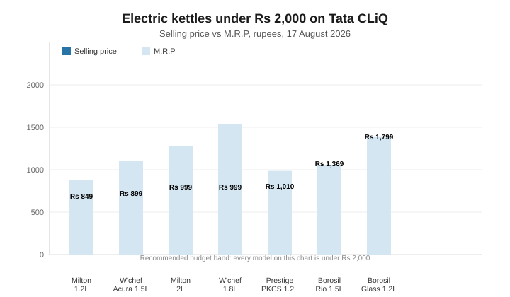

Best Electric Kettle Under Rs 2,000 in India (2026): 7 Reliable Picks
The short version
TL;DR: Yes, you can get a genuinely good electric kettle for well under Rs 2,000. The Wonderchef Acura 1.5L (Rs 899) is the best value on Tata CLiQ right now: 1500W, stainless-steel body, auto shut-off and a 360-degree swivel base for under a thousand rupees. For the most space per rupee, the Milton 2L at Rs 999 is the pick; for a household name with a 1-year warranty, the Prestige PKCS (Rs 1,010) is the safe buy.Last updated: 2026-08-17. Prices and specifications verified from live Tata CLiQ listings.
An electric kettle is one of those purchases where the budget tier is genuinely good: at Rs 2,000 you are buying the mainstream middle of the market. Wonderchef, Milton, Prestige and Borosil all put their volume sellers in this band, meaning better QC and faster service than no-name brands below Rs 700. Prices below are live Tata CLiQ figures for 17 August 2026 and swing with monthly sales, so re-check before you pay.
How do the best kettles under Rs 2,000 compare?
| Model | Capacity | Wattage | Price (Tata CLiQ) | M.R.P | Best for |
|---|---|---|---|---|---|
| Wonderchef Acura 1.5L | 1.5 L | 1500W | Rs 899 | Rs 1,500 | Best value overall |
| Milton Euroline Go 1.2L | 1.2 L | 1200W | Rs 849 | Rs 1,199 | Cheapest reliable pick |
| Wonderchef 1.8L | 1.8 L | n/a on listing | Rs 999 | Rs 2,100 | Biggest capacity on a budget |
| Milton 1350W 2L | 2.0 L | 1350W | Rs 999 | Rs 1,749 | Most litres per rupee |
| Prestige PKCS 1.2L | 1.2 L | 1500W | Rs 1,010 | Rs 1,345 | Most trusted brand |
| Borosil Rio 1.5L | 1.5 L | 1350W | Rs 1,369 | Rs 1,440 | Stainless-steel build |
| Borosil Glass Kettle 1.2L | 1.2 L | 1000W | Rs 1,799 | Rs 1,890 | Glass body, see-through brewing |
See all electric kettles on Tata CLiQ → (prices move with sales; verify before buying)

Which kettle under Rs 2,000 is the best value?
Wonderchef Acura 1.5L (Rs 899) is the pick. At 1500W it sits at the sweet spot of kettle power - fast enough for a full boil without stressing a standard 5-amp socket. The stainless-steel body suits daily chai, the thermostat and auto shut-off handle safety, and the 360-degree swivel base means you can grab it from any angle. Wonderchef gives it a 1-year warranty against manufacturing defects.
What is the cheapest reliable electric kettle?
The Milton Euroline Go 1.2L (Rs 849) is the entry point worth considering. Milton is the same Stovekraft stable as Pigeon, and this one packs auto shut-off and boil-dry protection - the two safety features that matter most - into a 1200W, 1.2L body. Plenty for a solo chai drinker or a small office desk.
Which budget kettle holds the most water?
Two candidates fight it out under Rs 1,000. The Milton 1350W (Rs 999) holds a full 2 litres - the largest capacity on this list - and the Wonderchef 1.8L (Rs 999) is close behind with a double-wall cool-touch body that keeps the outside from scorching your knuckles and holds the water hot longer. The Wonderchef's listing claims a boil in three to four minutes, and its auto shut-off also cuts power when empty.
What is the most trusted brand under Rs 2,000?
The Prestige PKCS 1500W (Rs 1,010) is the classic answer. Prestige's name in Indian kitchens goes back decades, and this model sticks to the formula: 1500W, 1.2L, a concealed heating element, automatic cut-off when the water boils, a power indicator, a 360-degree swivel base and a lockable lid. It carries a one-year manufacturer warranty, and the service network reaches small towns.
Which kettle under Rs 2,000 has the best build?
Two Borosil models cover this. The Borosil Rio 1.5L (Rs 1,369) is a clean stainless-steel kettle with a concealed element, a double-protection controller and a high-quality thermostat - the kind of spec sheet that usually costs more. The listing says 1350W while the spec sheet says 1500W; either way it boils fast for the price. The Borosil Electric Glass Kettle 1.2L (Rs 1,799) is the only glass-body option here - useful if you brew loose-leaf tea and want to watch the colour develop, though glass needs gentler handling than steel.
What should you check before buying an electric kettle?
Material. Stainless steel is the default: it does not shatter, cleans easily, and does not leach anything into the water. Glass looks nicer but needs careful handling; plastic is cheaper but retains odours and scratches.
Wattage. 1200W is slow, 1500W comfortable, 1800W-plus fast but heavy on current. For apartments and hostel rooms, 1500W is the sweet spot - about four minutes to boil a litre. If your building has very old wiring, prefer the lower-wattage models.
Capacity. Work out how many cups you actually make. 1.2L serves one to two people, 1.5L three to four, 1.8-2L a full family. Bigger is not automatically better - a large kettle takes longer to heat a small fill.
Auto shut-off. Non-negotiable - it stops a forgotten kettle from running dry. Boil-dry protection, which cuts power if you switch it on empty, is the companion feature to look for.
Warranty and swivel base. A 360-degree swivel base matters more daily than it sounds. One year on the product is the norm across Wonderchef, Prestige and Borosil; Milton's listings do not always spell theirs out.
So which electric kettle should you buy?
One line to a friend: buy the Wonderchef Acura 1.5L at Rs 899. It gives you the full modern feature set - 1500W, steel body, auto shut-off, swivel base - at a price that undercuts the "budget" tier elsewhere. Need more water? The Milton 2L at Rs 999 costs Rs 100 more and holds double the water. Want a name you trust? The Prestige PKCS (Rs 1,010) is worth the extra hundred.
All links in this article go to Tata CLiQ, which runs a 3.75% cashback programme through our affiliate channel - same prices you would see browsing the store directly. Prices were current on 17 August 2026 and will move with sales.
FAQ
Is 1500W enough for an electric kettle?
Yes. 1500W is the sweet spot for Indian homes: a litre boils in about four minutes and it runs on a normal 5-amp socket. Under 1200W is slower; 1800W-plus draws more current.
Does an electric kettle switch off automatically?
Every model recommended here does. Auto shut-off cuts power when the water reaches a boil, and boil-dry protection cuts power if you switch it on empty. Do not buy a kettle that lacks both - they are what make the appliance safe to leave unattended.
Can I use an electric kettle in a hostel or PG?
Yes, as long as the room has a standard wall socket. Pick a 1200W-1500W model like the Milton Euroline Go or Wonderchef Acura so you do not trip older wiring, and keep it on a heat-safe surface away from curtains.
Recap: your buying checklist
- Decide capacity first: 1.2L for one to two people, 1.5L for three to four, 2L for a full household.
- Take 1500W as the default; drop to 1200W only for very old wiring.
- Confirm auto shut-off and boil-dry protection are both listed.
- Prefer stainless steel; choose glass only to watch the brew.
- Check the warranty on the product page, and re-check the price at checkout - prices move with sales.
Sources: product listings, specifications, and prices read from Tata CLiQ product pages and search data on 17 August 2026.